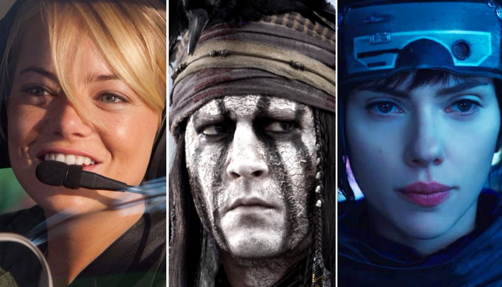

What is Whitewashing?
Emma Stone in Aloha (2015), Johnny Depp in The Lone Ranger (2013) and Scarlett Johansson in Ghost in the Shell (2017).
Whitewashing describes the habit of casting white actors to play non-white characters, often to shoehorn in a star, sometimes out of racial insensitivity, invariably to the detriment of people (and especially actors) of color. The film industry has a history of frequently casting white actors for roles involving people of color, including African Americans, Asians, Hispanics and Native Americans. Even worse, sometimes the creators of these movies will go to extra lengths to make these characters look like the people they portray. Makeup artists often use darker makeup on white actors to make them appear African or Middle Eastern; eye makeup is also used to make white actors appear East Asian, according to the Huffington Post. Producers will do anything to help white actors mimic the way people of color look, but they won’t hire an actor of that race, even though these actors would provide the most authentic appearance for that role. In essence, the usually white producers of these movies capitalize on the histories of other cultures and then disrespect them by casting white stars. They rake in billions of dollars for their own gain, while leaving the marginalized groups they steal from penniless. Actors of color can barely find work competing against white actors for regular roles, but for them to be overlooked for jobs portraying their own race is insulting.
Types of Whitewashing
There are three main types of white washing:
- Historical/Adaptation: Happens in films based on historical events, where white actors play the role of non-white characters. An exemplar of this first type is the classic movie, Birth of a Nation, where a number of white actors notoriously appeared in blackface. A more recent example is the film Argo, which recounts the CIA plot to rescue six Americans during the Iranian hostage crisis in 1981. In the film, Ben Affleck, a white man, plays the role of Tony Mendez, a Latino CIA officer who headed the operation. In addition to the incongruence between the real man and the actor, Tony Mendez's last name appears to be downplayed in the film. This also occurs in adaptations of written works of fiction. A fictional character from a novel is originally drawn or described as a person of color, yet in the live action adaptation, the character becomes inexplicably white. Sometimes the white actor pretends to be of a different race, as when Johnny Depp pretended to be a Native American man in The Lone Ranger. Other times the character's original racial identity is entirely abandoned and the character simply becomes white, as appears to be the case with The Last Airbender.
- Perspective: Events that comprise a historical moment are reconfigured, forcing the audience to experience the story from a white perspective. As such, this type of whitewashing is a principal agent in shifting the public memory of real events. For example, Dances with Wolves ostensibly depicts a period of what has been described by some historians as the Western Expansion, but is more accurately characterized as a patchwork of genocidal practices and policies by the United States government against the Native Peoples of North America. By inveigling its audience to experience this historical period through the eyes of a white protagonist, Dances with Wolves privileges the white experience. Dances, and other films like it, are whitewashed insofar as they succeed in prioritizing the white experience of those witnessing this tragedy over the experiences of Native families who lived through it and died from it.
- Major vs Minor Roles: Occurs when white actors secure all the major roles of a film, or they play the most well-rounded, complex characters of a film, leaving non-white actors with secondary and less important roles. Again, Dances of Wolves is an example of this type of film, but other examples include The Last Samurai and Dangerous Minds.